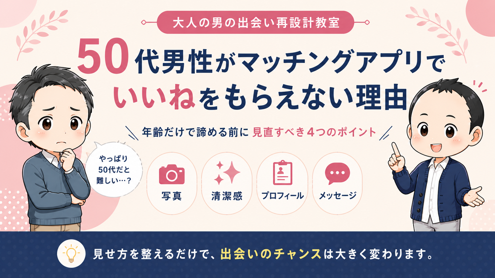
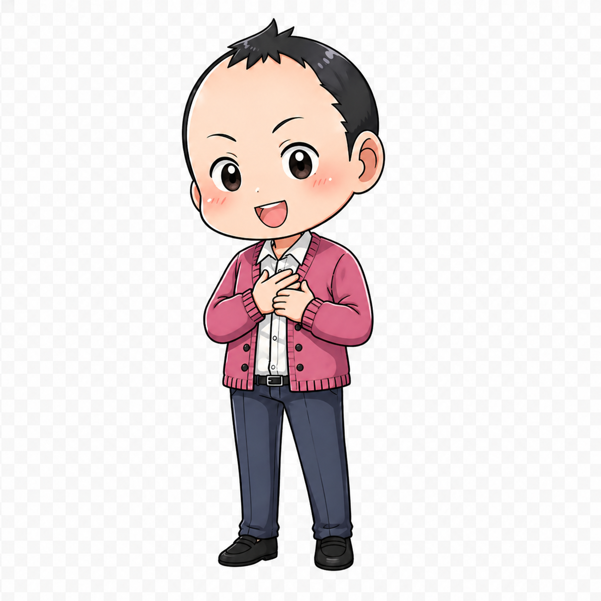

写真改善
50代男性がマッチングアプリでいいねをもらえない理由
年齢だけでなく、写真・清潔感・プロフィールの見え方で損しているポイントを整理します。
記事を読む →Articles
写真、清潔感、プロフィール文、メッセージ、会話設計。40代・50代男性が出会いで損しやすいポイントを、順番に整えていきます。
Recommended
まずは、出会いの入口で損しやすいところから見直していきましょう。

写真改善
年齢だけでなく、写真・清潔感・プロフィールの見え方で損しているポイントを整理します。
記事を読む →写真改善
暗い写真、自撮り感、清潔感不足など、最初に直したい写真の減点要素を整理します。
記事を読む →プロフィール改善
自慢でも卑屈でもない、安心感と人柄が伝わるプロフィール文の考え方をまとめます。
記事を読む →清潔感・若見え
髪、肌、服、靴、姿勢など、女性が無意識に見ている清潔感のポイントを整理します。
記事を読む →メッセージ・会話
質問攻め、焦り、距離感のズレを避けて、自然に会話を続ける考え方を解説します。
記事を読む →清潔感・若見え
年齢を隠すのではなく、自然体の魅力が伝わる整え方を考えます。
記事を読む →Profile Redesign
写真・プロフィール文・メッセージの流れを見れば、どこで損しているかはかなり見えてきます。自分では気づきにくい減点ポイントを一緒に整理します。
プロフィール再設計を見る